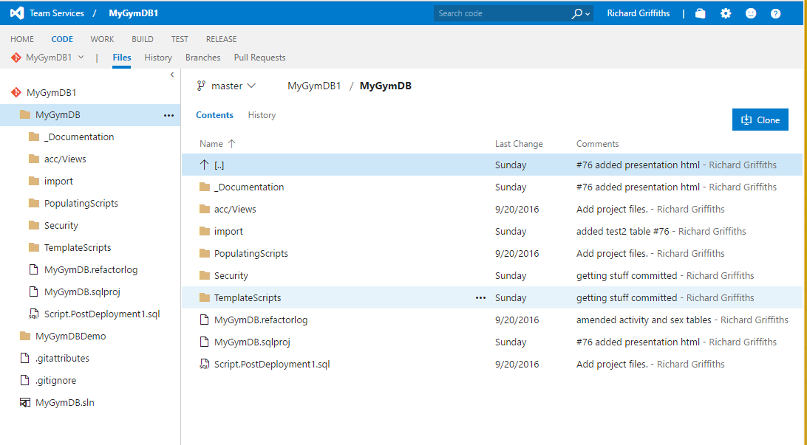
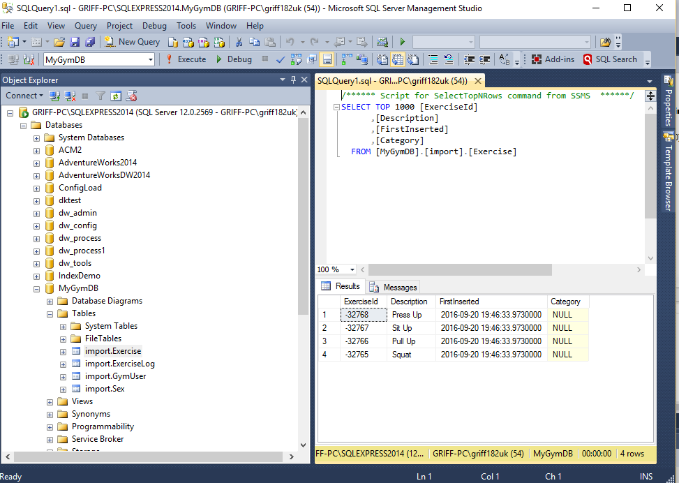
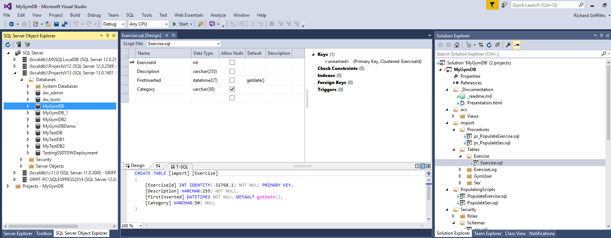

class: center, middle # **DIY DB From Home: ** **Build a Database for free with Team Services Online, SSDT and Azure** **Cardiff 04/10/2016** Richard Griffiths ([DataGriff](www.DataGriff.com)) MCTS 2008, MCP 2012 Database Developer at Confused.Com ??? --- ??? Here I am being all corporate. My favourite is that one. --- # Overview 1. Have an idea (or steal one)! 2. Design a database 3. PreRequisites 4. Work Management 5. Source Control 6. Create an infrastructure 7. Database tools 8. Demo 9. Get stuck in! 10. Resources ??? * Today we're going to provide a complete solution of how to plan, design and manage the work for a database architecture. Demonstrating all the free tools available and the basics of how to use them. * I'll talk briefly about source control and its importance, how we can utilise the azure cloud platform to create a highly available database platform, and then get stuck into a demonstration covering the whole lot. --- # Have an idea! * Don't stress too much over this - anything can be stored in a database * If you're really stuck for time just steal a sample database from online * [Microsoft Adventureworks](https://msftdbprodsamples.codeplex.com/releases/view/125550) * [Microsoft World Wide Importers](https://msftdbprodsamples.codeplex.com/) * [Stackoverflow](https://www.brentozar.com/archive/2015/10/how-to-download-the-stack-overflow-database-via-bittorrent/) * Etc.. * Or think of something that interests you that you know well * "Ooh me like exercise! I'll do a an exercise thingy" - Griff 2016 * So today we're going to make a (very small) gym database ??? * First off remember we're just messing about with database structures and having some fun. * The aim of these exercises is to do something simple and practice with the tools, but try and make it something you're interested in, you'll be more likely to continue on with the project. * Replicate something someone else has done in your own way. * Or steal some of the Microsoft or StackOverflow databases and play with them. * Today we're going to look at creating a really simple gym / exercise database, as it's something that interests me. (DataKennel) --- # Design a database * Get yourself a paper and pen... * You'll learn over time, lets just have some fun! ??? * I'm not going into in depth of database design today as, well I don't have the time, it's more about the tools I want to cover, but I'd recommend other sticking to third normal form, or even just do a flat table if you want to start with something really simple. * Here I've just done a quick drawing on a piece of paper (or whiteboard) in the 3NF. * All I've done basically is provide keys to some repeating values (sex and exercise) --- # PreRequisite (Free!) Resources This is what today is all about, showing you that you can use free tools from home to make a complete database service from home. * [Git](https://git-scm.com/) & [Github Account](https://github.com/) - For Source Control * [Team Services Online Account](https://www.visualstudio.com/team-services/) - For Source Control and Work Management * [Visual Studio Community Edition](https://www.visualstudio.com/vs/community/) - For code development and infrastructure * [SQL Server Express](https://www.microsoft.com/en-gb/download/details.aspx?id=52679) - For code development and infrastructure * [Azure Account](https://azure.microsoft.com/en-gb/) - For infrastructure * [Notepad++](https://notepad-plus-plus.org/download/v6.9.2.html), [Atom](https://atom.io/) - These are both useful text editors ??? * These are all the free tools you need to get going, so I recommend you get them! * Git and Github have become an invaluable tool for me. A lot of it is command based but you can totally get by most of the time with like three commands. Besides working in commandline sometimes makes me feel like I'm a proper techy person. * Get by with Git blog post. * Git is the reason why there is no excuse for no source control anymore. Local and distributed. * Team services online is basically a free team foundation service you can use for free. * Visual Studio Community edition - majority of the tools for SQL development and beyond! * SQL Server express - lightweight local installation of SQL. Very useful for development. * Azure account - your gateway to the cloud (as you saw earlier) * Some good text editors. I was a Notepad++ boy but I do like using atom for markdown... --- # Work Management * Using team services online for free * Can collaborate with up to 5 other users * Create projects containing * User stories * Backlog * Kanban board * Source control * Does a heck of a lot more... * Automated Testing * Automated Builds * Automated Releases * Loads of documentation online ??? * Team services online is an awesome solution to managing all of your personal development. * As much as I use git and github for quick stuff or analyses code, team services online is by far the choice for planning and managing a longer term development project with all of the work management tools it offers. * I do still use the git version control choice though that it offers * Create good user stories explicitly describing what is required from the development work and document a good acceptance criteria so it can be completely tested. * Kanban board makes ie easy to see what's going on and WIP (Work in Progress) * Link your code work with user stories. * Does a lot more that I'm still earning about, lots of documentation online! --- # Team Services Product Backlog View ??? * Here is a picture of the team services product backlog prioritised. --- # Team Services Kanban Board ??? * Here is a picture of the team services product kanban board with one work item, in work in progress (WIP), a user story with three tasks to be completed. --- # Team Services User Story ??? * Here is an example of a very basic user story I have myself. Note the testable acceptance criteria. --- # Source Control * Keeps all your code in a definitive location (the source) * Keeps a history of your code and changes you've made * No excuses anymore, TFS online, git and github are free * It's important in the enterprise, it's important for us! ??? * Source control is extremely important. * It creates one version of the truth. * Creates a complete history of your code so you can roll back changes (verison control) * Team services online and GitHub are distributed source control products, so no matter where you are you can pull your code down, work on it, then push it back. * Means you are always working from the same source code. --- # Team Services Code  ??? * Example of source code contained in team services online. --- # Create an infrastructure * Use localdb in SSDT for immediate development and testing * Use our local machine with SQL Express for main development /test environment * Use Azure database for production database * Using Azure Platform as a Service (PaaS) is very easy to setup! * PaaS - Azure provide the SQL platform and manage it completely for you * IaaS - Infrastructre as a Service * But we'll be using PaaS * **Hint for Region Selection -** [Azure Speed Test](http://azurespeedtest.azurewebsites.net/) * Pick the region with the lowest latency! ??? * SSDT provides its own build in localdb for visual studio that populates on build, very good for basic logic checking and test data samples. * Installed with Visual Studio Community Edition. * SQL Express for larger datasets but still local so quick to develop. * Easy to download and setup. * Push to Azure to make more available for production. * Requires Azure account. --- # SQL Express  ??? * Management studio pointed at a local SQL Express instance. --- # Azure SQL Database ??? * Example of the Azure portal showing a SQL database setup. --- # Azure Dashboard ??? * Overview of managing your Azure products with the portal --- # Database Tools * Management studio (SSMS) - this will come with your installation of express * The standard tool for interacting with SQL Server * But today... **SSDT (SQL Server Data Tools)** * Database project in visual studio community edition * A lot of functionality e.g. dapacs, localdb, schema compare, data compare * Allows you to check in your code to source control * Link your code with user stories * State based so SSDT works out your changes for you ??? * SSMS with express, still most popular tool and you will use it * SSDT comes with visual studio community edition * You choose SQL Server under projects and create a SQL database project * Has lots of tools and add-ins you can use * Ability to utilise source control (TFS online) and link with work items * When using git need to use a # in your commit message! * SSDT works out only the changes that need deploying for you --- # SQL Server Data Tools  * Here is an example of the SSDT interface, which is visual studio * Explorer on the left showing localdb * A table object being developed in the middle * The database solution and all of its code in solution explorer on the right --- # Demo * Create a database in SQL Azure [Demo Link](https://www.youtube.com/watch?v=dYht5jJOtAY&list=PLA5YLvtN7pNPqa77xX-g0K5roN93BOAS2&index=1&t=1s) * Set up Visual Studio Team Services Project [Demo Link](https://www.youtube.com/watch?v=SNMFOmGdnj4&list=PLA5YLvtN7pNPqa77xX-g0K5roN93BOAS2&index=2) * Add user story as work [Demo Link](https://www.youtube.com/watch?v=42306LF3ht8&list=PLA5YLvtN7pNPqa77xX-g0K5roN93BOAS2&index=3) * Add task to user story [Demo Link](https://www.youtube.com/watch?v=UwonTPDneag&list=PLA5YLvtN7pNPqa77xX-g0K5roN93BOAS2&index=4) * Link project to visual studio [Demo Link](https://www.youtube.com/watch?v=lbQf5tOVP24&list=PLA5YLvtN7pNPqa77xX-g0K5roN93BOAS2&index=5&t=1s) * Develop objects [Demo Link](https://www.youtube.com/watch?v=dQUdICt8ylo&list=PLA5YLvtN7pNPqa77xX-g0K5roN93BOAS2&index=6) * Check in Code [Demo Link](https://www.youtube.com/watch?v=Be3ZT8qxcwI&list=PLA5YLvtN7pNPqa77xX-g0K5roN93BOAS2&index=7) * Populate object with data [Demo Link](https://www.youtube.com/watch?v=GPurR4iQNPA&list=PLA5YLvtN7pNPqa77xX-g0K5roN93BOAS2&index=8) * Build and look at localdb in SSDT [Demo Link](https://www.youtube.com/watch?v=LySjzr9BreU&list=PLA5YLvtN7pNPqa77xX-g0K5roN93BOAS2&index=9) * Publish to Development (local express) [Demo Link](https://www.youtube.com/watch?v=chCGpFzUUrM&list=PLA5YLvtN7pNPqa77xX-g0K5roN93BOAS2&index=10) * Build and Publish to Production (Azure) [Demo Link](https://www.youtube.com/watch?v=ssrmOO8Gv-4&list=PLA5YLvtN7pNPqa77xX-g0K5roN93BOAS2&index=11) ??? Lets go! Each demo bullet point has a link to a youtube video --- # Bask in the glory of what we have achieved! * We created a database infrastructure * We managed our work * We planned our work * We developed database objects and linked it to our work * We kept our code in source control * We published our database to a cloud platform ??? We just did a hell of a lot, all for free and to a fairly good practice... KEY: All of these skills are transferable to the workplace. --- # Immerse yourself * Please go and have a mess around with free tools * Google is your friend * Come to the local user group sessions (meetup.com, SQL, .Net, Agile and many more!) * Work through training material * Force your bosses to get you books * Have fun! ??? * Immerse yourself in these new technlogies * One day you will wake up after some time of confusion - and realise you know stuff! * Just like anything else, the better you understand the more you will enjoy --- # Further Resources * [MyGymDB Github Repository](https://github.com/griff182uk/MyGymDB) - more in depth walkthrough of today with extra code * [DataGriff.com](http://www.datagriff.com/) * Look at categories and tags to find what you're after * Microsoft Documentation * [Azure](https://azure.microsoft.com/en-gb/documentation/) * [Team Services](https://www.visualstudio.com/sl-si/docs/overview) * [Microsoft Virual Academy](https://mva.microsoft.com/) * [Youtube!](https://www.youtube.com/) (e.g. [DataGriff Channel](https://www.youtube.com/channel/UCVjo67X1I-r4TMJRTQBKVpA)) * Look at SQL Relay 2016 Playlist... * [Pluralsight](http://pluralsight.com/) (free trial period when do [visual studio online](https://www.visualstudio.com/vso/)) --- class: center, middle # Please give us your feedback: [sqlrelay.co.uk/feedback](sqlrelay.co.uk/feedback) Thank you